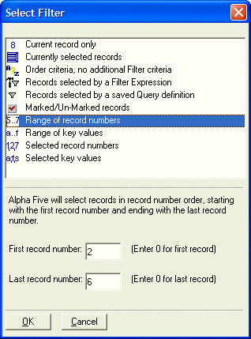

UI_GET_RANGE()
Syntax
Range_Expn as P = UI_GET_RANGE( [ Top_Level_Only as L [, External_Table_Set as L [, External_Table_Set_Name as C ]]] )
Argument | Description | ||||||||||||||||||||||||
Range_Expn | A pointer to a dot variable that contains the current filter and order expressions.
| ||||||||||||||||||||||||
Top_Level_Only | Optional. Default = .F.
| ||||||||||||||||||||||||
External_Table_Set | Optional. Default = .F.
| ||||||||||||||||||||||||
External_Table_Set_Name | Optional. The name of the external table or set. |
Description
The UI_GET_RANGE() function displays the Select Filter dialog box to help the user select a filter or range for the current table or set.

Limitations
Desktop applications only.
Examples
? ui_get_range(.f.) = error_message = "" filter = "between(recno() ,2,6)" flag = .F. lastbutton = "ok" order = "recno() " xbasic = query.filter = "between(recno() ,2,6)" query.order = "recno() " |
If you need to define filter or order expressions for a table or set that is not currently open, use a variation of this script, which retrieves the filter and order information for the invoice set.
code = <<%code% dim s as P dim filter as P s = set.open("invoice.set") filter = ui_get_range() if filter.lastbutton = "OK" then ui_msg_box("", filter.filter) else ui_msg_box("", "user cancelled") end if s.close() %code% evaluate_template_private(code) |
See Also
((User Interaction _UI_ Functions|User Interaction (UI) Functions)), Query Functions and Methods